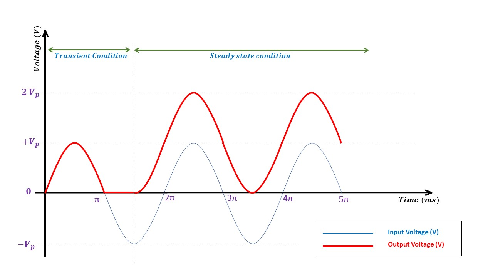

Study of Clamper Circuits
What is a clamper?
Clampers are electronic circuits that shift the DC level of the input signal to the desired level.
It is also known as a level shifter.
It consists of a capacitor, diode, DC voltage source (battery) and a load resistor.
Types of Clamper circuits
There are six types of clampers based on the DC level shift provided to the input signal.
| Type | Circuit Diagram | Output waveform | Output Voltage | |
|---|---|---|---|---|
| 1 | Positive unbiased clamper |
 |
 | Vo = Vin + Vb |
| 2 | Negative unbiased clamper |
|
Vo = Vin + Vb |
|
| 3 | Positive biased clamper with positive reference |
|
Vo = Vin + Vb |
|
| 4 | Positive biased clamper with negative reference |
|
Vo = Vin + Vb |
|
| 5 | Negative biased clamper with positive reference |
|
Vo = Vin + Vb |
|
| 6 | Negative biased clamper with negative reference |
|
Vo = Vin + Vb |
Components used in Clampers
jnewfew
frrfrf
kefe